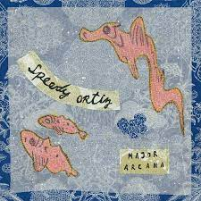
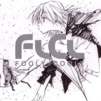
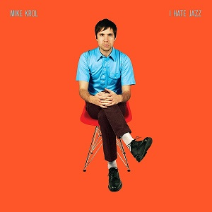
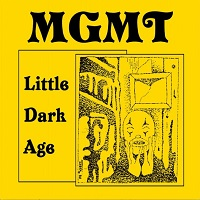

Car Seat Headrest
Car Seat Headrest is an indie rock band. They have made Teens of Denial, How to Leave Town, and Twin Fantasy.

Car Seat HeadrestCar Seat Headrest is an indie rock band. They have made Teens of Denial, How to Leave Town, and Twin Fantasy.
|
Speedy OrtizSpeedy Ortiz is an indie rock band. They call back to 90s grunge rock and punk rock in their albums. Some of Ortiz's albums are Major Arcana, Foil Deer, and Twerp Verse.  |
The PillowsThe Pillows is an alternative rock band. The Pillows made the sound track for a show called flcl. A couple of their albums are FLCL Fooly Cooly, Runners High, and Lostman Go to Budokan.  |
Mike KrolMike Krol is a garage rock artist. He uses a lot of electric guitars and power cords. His albums are I Hate Jazz, Power Cords, and Turkey.  |
MGMTMGMT is a alternative/indie band. Some of their albums are Little Dark Age, Congratulations, MGMT.  |